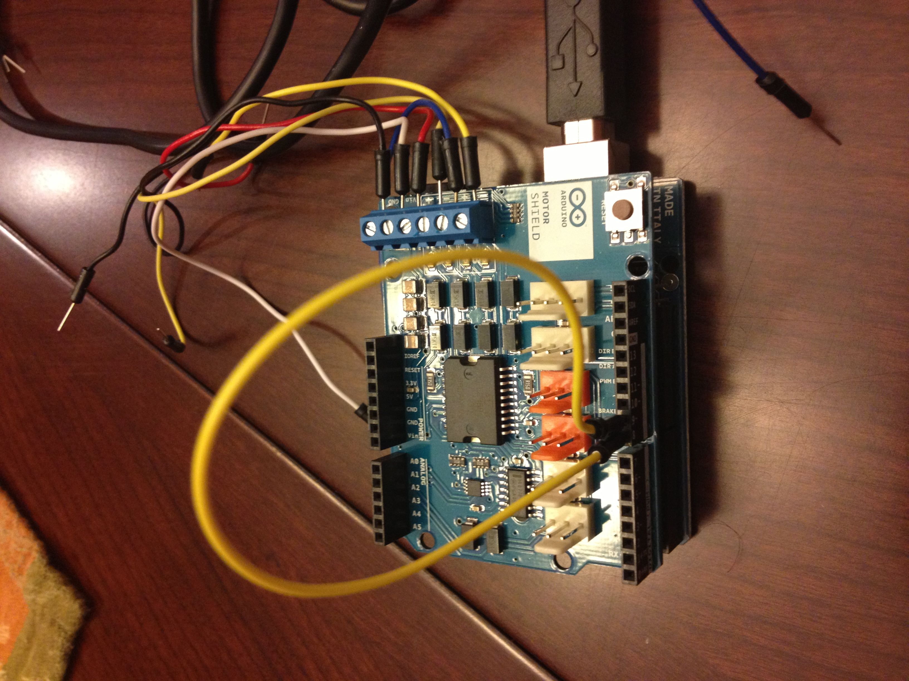
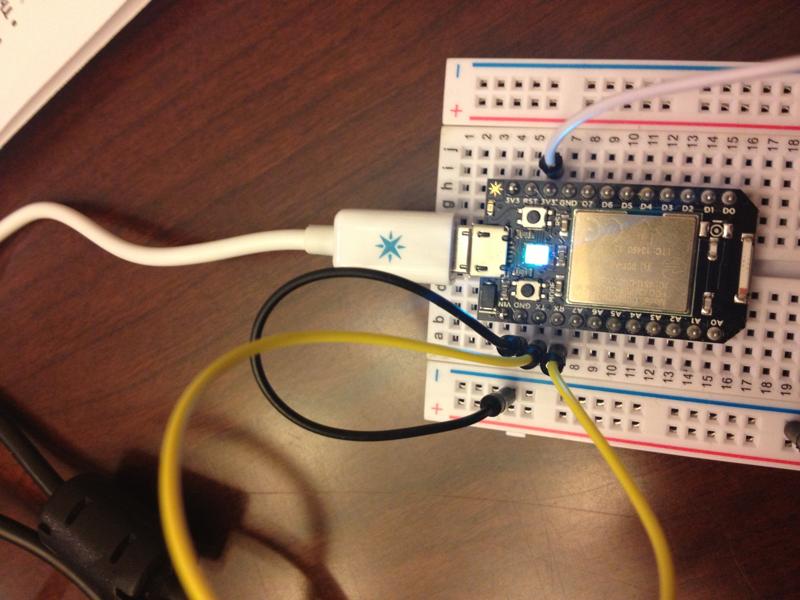
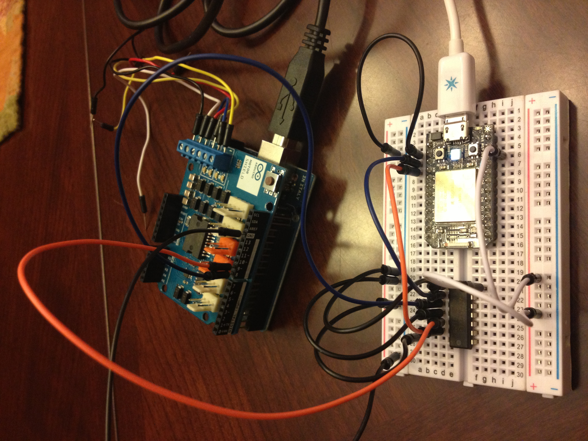

2: Get the Particle board to talk to the Arduino
"Wait a minute", you might be asking, "why do we need two controllers?". We don't, really. The Particle could do just fine on its own, but I had the parts and getting boards to talk to each other via serial is a fun exercise:)-
Components required
-
Arduino serial communications
The Arduino I have shared its main serial pins with the USB serial. This is a pain if you also want to plug it into your computer and into another board, so I used the AltSoftSerial to enable serial communications on pins 8 & 9. This results in a pin-conflict with the motor shield, but we'll work around that later.
Load this program onto your Arduino and wire connect pin 8 to pin 9 as shown below. This will get the Arduino talking to itself over serial.
 -
Particle serial communications
Load this program onto your Particle board and connect the RX and TX pins to each other (yellow wire beow). This will get the Particle talking to itself over serial
 -
Particle to Arduino serial communication
If you're using an Arduino that outputs 5v on its digital pins as I am, you have to convert the voltage down to 3.3v for the Particle to protect its pins Pins 8 and 9 on the Arduino are RX and TX respectively. They will talk to TX and RX of the Particle through the shifter. Below is a pic of everything wired up. [diagram pending]
Boot up the Arduino first - it's more forgiving about accepting a Serial connection from a new device. Boot up the Particle next. They should start talking to each other. If you open the Arduino's serial console you should see "ping"s coming from the Particle. If you open the Particle's serial console in your computer's terminal you should see "pong"s coming from your Arduino.